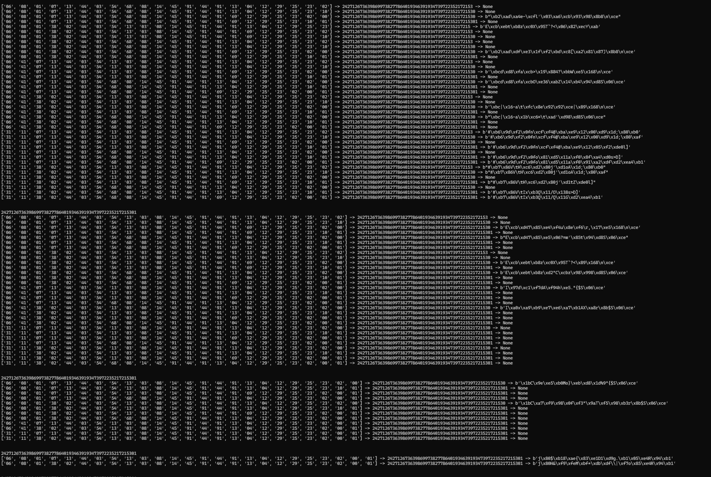

Algorithm | DefCamp 2022 | Catégorie Crypto | [Vozec/FR]
February 12, 2022
Fichier(s)
Nécessaires
- Python3
Flag
CTF{267a4401ea64e7167168969743dcc708399e3823d40e4ae37c78d675e281cb14}
Description
Hello friends. Just a regular algorithm Flag format: CTF{sha256(message_decrypt)}
Solution détaillée
Dans Flag_enc on retrouve le flag chiffré : 242712673639869973827786401934639193473972235217215301
Analysons le chiffrement dans chall.py :
flag = ' [test]'
hflag = flag.encode('hex')
iflag = int(hflag[2:], 16)
def polinom(n, m):
i = 0
z = []
s = 0
while n > 0:
if n % 2 != 0:
z.append(2 - (n % 4))
else:
z.append(0)
n = (n - z[i])/2
i = i + 1
z = z[::-1]
l = len(z)
for i in range(0, l):
s += z[i] * m ** (l - 1 - i)
return s
i = 0
r = ''
while i < len(str(iflag)):
d = str(iflag)[i:i+2]
nf = polinom(int(d), 3)
r += str(nf)
i += 2
print r
Le flag est d’abord encodé en Hexadécimal , puis , convertit en nombre .
Une chose qui saute aux yeux et que c’est un chiffrement par block. Les charactères sont donc chiffrés par block de 2. Ici chaque block est stocké dans la variable d
Puis le block est passé dans la fonction polinom et le résultat est concaténé a r , la variable renvoyé à la fin du script.
La fonction polinom semble complexe et l’approche suivante va permettre de ne pas s’en occuper beaucoup. Nous n’allons donc pas tenter de l’inverser.
J’ai quand même simplifié la fonction un tout petit peu en supprimant le paramètre m qui reste constant :
def polinom(n):
i = 0
z = []
s = 0
while n > 0:
if n % 2 != 0:
z.append(2 - (n % 4))
else:
z.append(0)
n = (n - z[i])/2
i = i + 1
z = z[::-1]
l = len(z)
for i in range(0, l):
s += z[i] * 3 ** (l - 1 - i)
return s
Une chose notable est que la fonction polinom est statique, elle prend une entrée et renvoie une sortie ; aucun autre paramètre influe sur le résultat . Ainsi, chaque entrée aura sa sortie correspondante.
On peut donc générer un mapping de tous les blocks de 2 nombres avec leurs résultats correspondants :
def mapping():
mapping = {}
for i in range(0,10):
for j in range(0,10):
block = str(i)+str(j)
val = int(polinom(int(block)))
mapping[str(block)]=str(val)
return mapping
Résultat :
{'00': '0', '01': '1', '02': '3', '03': '8', '04': '9', '05': '10', '06': '24', '07': '26', '08': '27', '09': '28', '10': '30', '11': '71', '12': '72', '13': '73', '14': '78', '15': '80', '16': '81', '17': '82', '18': '84', '19': '89', '20': '90', '21': '91', '22': '213', '23': '215', '24': '216', '25': '217', '26': '219', '27': '233', '28': '234', '29': '235', '30': '240', '31': '242', '32': '243', '33': '244', '34': '246', '35': '251', '36': '252', '37': '253', '38': '267', '39': '269', '40': '270', '41': '271', '42': '273', '43': '638', '44': '639', '45': '640', '46': '645', '47': '647', '48': '648', '49': '649', '50': '651', '51': '656', '52': '657', '53': '658', '54': '699', '55': '701', '56': '702', '57': '703', '58': '705', '59': '719', '60': '720', '61': '721', '62': '726', '63': '728', '64': '729', '65': '730', '66': '732', '67': '737', '68': '738', '69': '739', '70': '753', '71': '755', '72': '756', '73': '757', '74': '759', '75': '800', '76': '801', '77': '802', '78': '807', '79': '809', '80': '810', '81': '811', '82': '813', '83': '818', '84': '819', '85': '820', '86': '1914', '87': '1916', '88': '1917', '89': '1918', '90': '1920', '91': '1934', '92': '1935', '93': '1936', '94': '1941', '95': '1943', '96': '1944', '97': '1945', '98': '1947', '99': '1952'}
Maintenant ; Nous savons que chaque résultat est concaténé a la variable r donc nous allons tester toutes les possibilités pour obtenir block par block le nombre qui donne le flag fourni.
Exemple :
Si on essaye de chiffrer la chaine : baa , on obtient la sortie : 72964764026
Si on en suit le mapping précédent, on peut décomposer le début de la chaine comme :
- 72 + quelque chose ou
- 729 + quelque chose
C’est là que les problèmes commencent, certain nombre du mapping contiennent eux-mêmes d’autres nombre !
Ainsi, le résultat 739 qui donnerai 60 peut être décomposé comme 73+9 qui sont aussi dans le mapping est qui donnerai 1304
On doit donc tester le block suivant s’il peut être décomposé avec les nombres présent dans le mapping.
Reprenons l’exemple précédent, on décompose les block un par un
(Rappel | Valeur attendue : 72964764026 )
- ETAPE 1:
Décomposition n°1 : 72 | Résultat : 12
Décomposition n°2 : 729 | Résultat : 64
- ETAPE 2:
Décomposition n°1 : 72 + 9 | Résultat : 1204
Décomposition n°2 : 729 + 647 | Résultat : 6447
- ETAPE 2:
Décomposition n°1 : 72 + 9 + 647 | Résultat : 120447
Décomposition n°2 : 729 + 647 | Résultat : 6447
- ECT
Ici on aura 2 décompositions qui donnent 72964764026 mais une seule donne la bonne sortie !
['64', '47', '45', '07'] (64474507) -> 72964764026 -> b'baa'
['12', '04', '47', '45', '07'] (1204474507) -> 72964764026 -> None
Notre Flag
J’ai donc tenté à la main de décomposer le flag fourni :
c1 = ["242","71","267","3","639","8","699","738","27","78","640","1934","639","1934","739","72","235","217","215","3","0","1"]
c2 = ["242","71","267","3","639","8","699","738","27","78","640","1934","639","1934","73","9","72","235","217","215","3","0","1"]
c3 = ["242","71","267","3","639","8","699","738","27","78","640","1934","639","1934","739","72","235","217","215","30","1"]
c4 = ["242","71","267","3","639","8","699","738","27","78","640","1934","639","1934","73","9","72","235","217","215","30","1"]
Malheureusement , aucune des décompositions n’a fonctionnés :(
Iflag: 31113824435468814459144916912292523201
Recovered : b'\x17hM\xfbXFtU\xdch\xbe\xb1\x840l\xc1'
Iflag: 311138244354688144591449113412292523201
Recovered : b'\xea\x13\x0b\xd1r\xc0\x8bZ\x9c\x17@D\x05k4\xc1'
Iflag: 31113824435468814459144916912292523101
Recovered : b'\x17hM\xfbXFtU\xdch\xbe\xb1\x840l]'
Iflag: 311138244354688144591449113412292523101
Recovered : b'\xea\x13\x0b\xd1r\xc0\x8bZ\x9c\x17@D\x05k4]'
J’ai donc écrit ce script qui test tous les possibilités et qui supprimes les chemins impossible sous forme d’arbres de combinaisons :
def brute():
flag = [['']]
final = []
for k in range(0,len(out)//2):
allposs = []
for possibility in flag:
for i in range(0,10):
for j in range(0,10):
block = str(i)+str(j)
current = calc(''.join(possibility)+block)
if(out.startswith(current)):
newlist = possibility[:]
if newlist == ['']:
newlist = []
newlist.append(block)
allposs.append(newlist)
if(possibility not in final):
if(current == out):
final.append(possibility+[block])
flag = allposs
allposs = []
print(out)
for possibility in flag:
print(f'{possibility} -> {calc("".join(possibility))} -> {decrypt("".join(possibility))}')
print('\n')
print("\n\n"+"#"*50+"\n")
print(f" [*] {str(len(final))} combinaisons trouvés !\n")
for goodcombi in final:
print(f" {goodcombi} ({''.join(goodcombi)}) -> {calc(''.join(possibility))} -> {decrypt(''.join(goodcombi))}")
print("\n\n"+"#"*50)
Une fois tous assemblé, voici le code final :
import binascii
def polinom(n):
i = 0
z = []
s = 0
while n > 0:
if n % 2 != 0:
z.append(2 - (n % 4))
else:
z.append(0)
n = (n - z[i])/2
i = i + 1
z = z[::-1]
l = len(z)
for i in range(0, l):
s += z[i] * 3 ** (l - 1 - i)
return s
def calc(iflag):
i = 0
r = ''
while i < len(str(iflag)):
d = str(iflag)[i:i+2]
nf = int(polinom(int(d)))
r += str(nf)
i += 2
return r
def decrypt(input):
try:
hexa = hex(int(input[:len(input)-2]+input[len(input)-2:].replace('0','')))
return binascii.unhexlify(bytes(hexa[2:],"utf-8"))
except:
return None
def exemple(flag):
decomposition1 = []
decomposition2 = []
hflag = binascii.hexlify(flag).decode()
iflag = int(hflag[2:], 16)
i = 0
r = ''
while i < len(str(iflag)):
d = str(iflag)[i:i+2]
nf = int(polinom(int(d)))
decomposition1.append(str(nf))
decomposition2.append(d)
r += str(nf)
i += 2
return r,[[decomposition1]+[decomposition2]]
def brute():
flag = [['']]
final = []
for k in range(0,len(out)//2):
allposs = []
for possibility in flag:
for i in range(0,10):
for j in range(0,10):
block = str(i)+str(j)
current = calc(''.join(possibility)+block)
if(out.startswith(current)):
newlist = possibility[:]
if newlist == ['']:
newlist = []
newlist.append(block)
allposs.append(newlist)
if(possibility not in final):
if(current == out):
final.append(possibility+[block])
flag = allposs
allposs = []
print(out)
for possibility in flag:
print(f'{possibility} -> {calc("".join(possibility))} -> {decrypt("".join(possibility))}')
print('\n')
print("\n\n"+"#"*50+"\n")
print(f" [*] {str(len(final))} combinaisons trouvés !\n")
for goodcombi in final:
print(f" {goodcombi} ({''.join(goodcombi)}) -> {calc(''.join(possibility))} -> {decrypt(''.join(goodcombi))}")
print("\n\n"+"#"*50)
#out,decomposition = exemple(b'abaa')
out,decomposition = "242712673639869973827786401934639193473972235217215301",None
brute()
def mapping():
mapping = {}
for i in range(0,10):
for j in range(0,10):
block = str(i)+str(j)
val = int(polinom(int(block)))
mapping[str(block)]=str(val)
return mapping
print(decomposition)
Voici le résultat :
 (Sortie Complète)
Aprés analyse des résultats, on obtient un message en clair : [ola_th1s_1s_p0l] !
Une fois passé en sha256 ; on obtient le flag :
CTF{267a4401ea64e7167168969743dcc708399e3823d40e4ae37c78d675e281cb14}